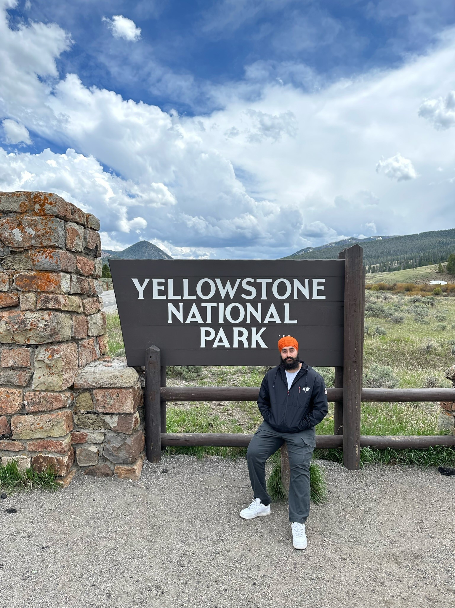

About Me
I am in my senior year, pursueing a bachelors degree in Computer Science, at California State University, Sacramento. I aim to get into the field of cybersecurity by the time I graduate. Since I already have a personal website, I am hosting this site on a new github account that I made especially for CSC 193a. Outside of school, I enjoy hiking, travelling, working out, and motorcycles. Interested in what my actual website portfolio looks like? Feel free to check it out. .
